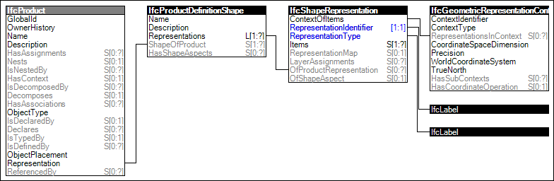

Link to this page
Link to this pageThe shape of products may be represented in multiple ways for different purposes. Each representation has a well-known string identifier and a particular representation context. There may be multiple representation contexts to describe a shape at various levels of detail. Most building elements have a 'Body' representation which defines or approximates the physical shape and volume. In addition to physical building elements, non-physical elements may have representations such as spaces and openings.
Figure 59 illustrates an instance diagram.
 |
Figure 59 — Product Geometric Representation |